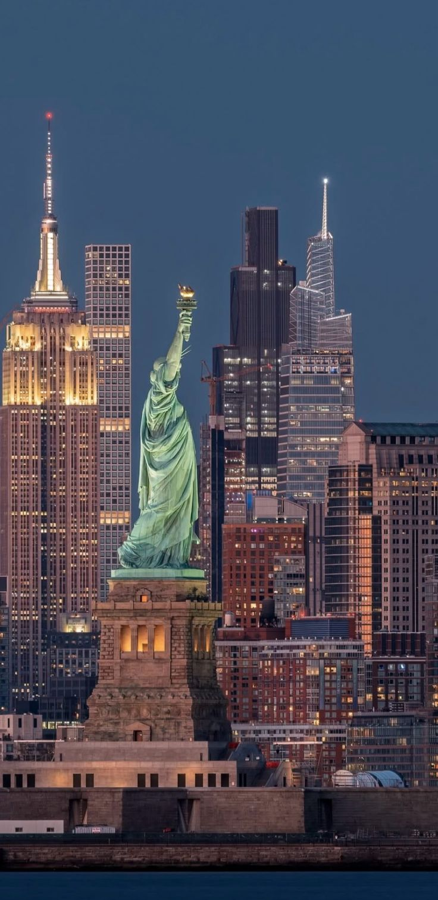
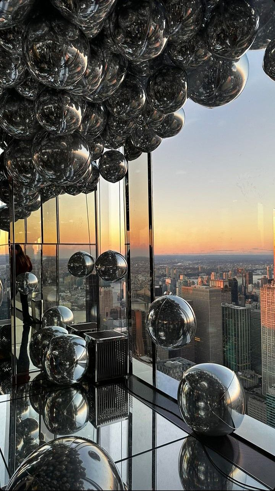
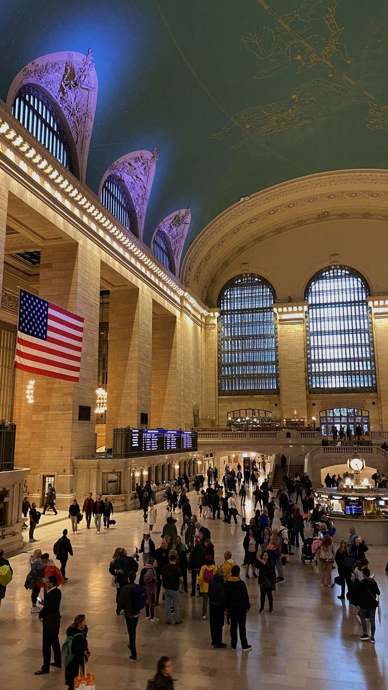
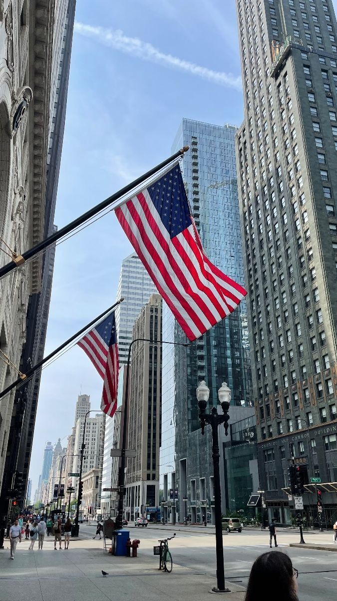
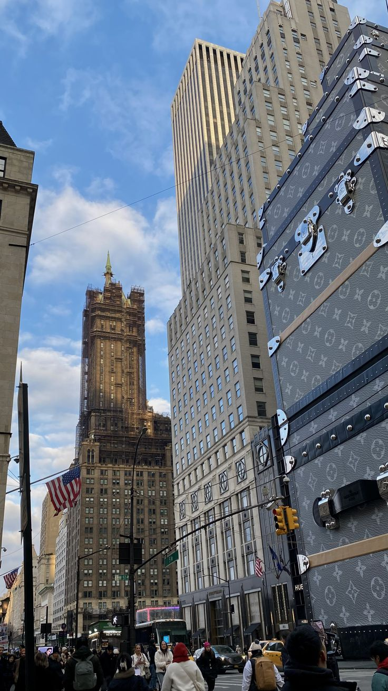

Nueva York es una de las ciudades más importantes y visitadas del mundo. Es conocida por sus rascacielos, su diversidad cultural, sus museos, parques y lugares emblemáticos como la Estatua de la Libertad y Times Square.
| Dato | Información |
|---|---|
| País | Estados Unidos |
| Población | Más de 8 millones de habitantes |
| Idioma | Inglés |
| Atractivo principal | Estatua de la Libertad |





Nueva York es una ciudad llena de historia, cultura y entretenimiento. Cada año recibe millones de turistas que disfrutan de sus monumentos, parques, museos y actividades. Es considerada una de las ciudades más influyentes del mundo.